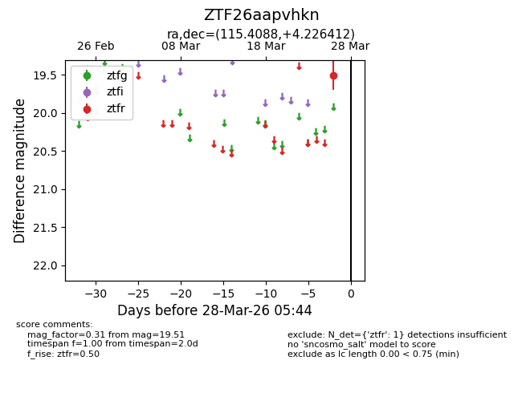
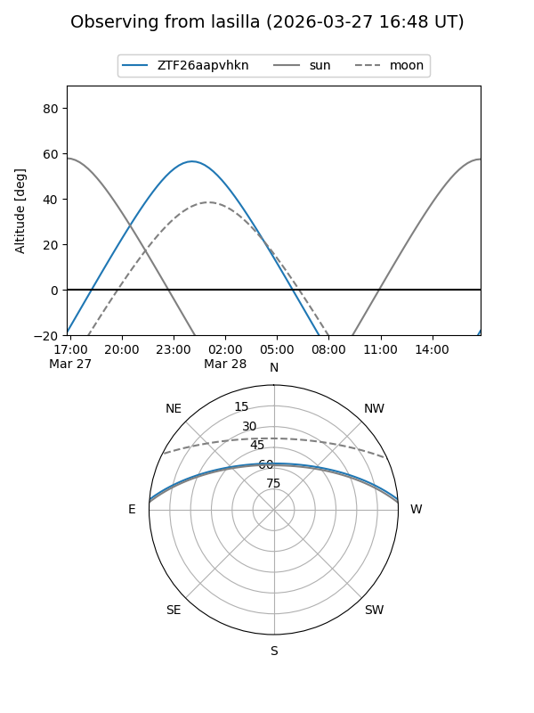
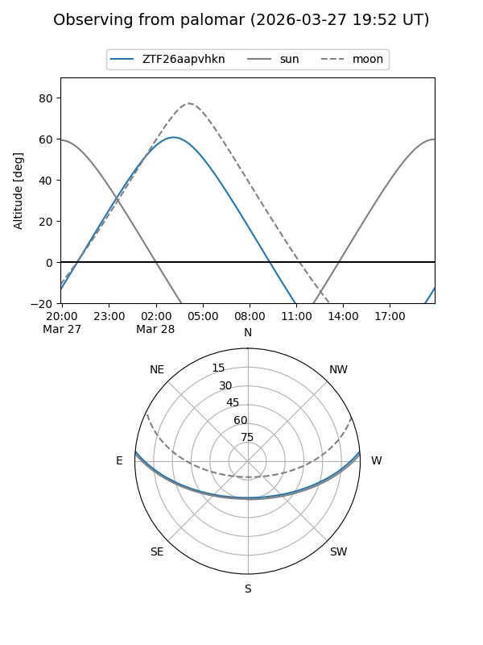

ZTF26aapvhkn
Target ZTF26aapvhkn at 2026-03-28 05:47
Aliases and brokers:
FINK: link
Lasair: link
ALeRCE: link
alt names
ZTF26aapvhkn (ztf,fink_ztf)
Coordinates:
equatorial (ra, dec) = 115.4088,+4.22641
equatorial (HMS+DMS) = 07:41:38.10,+04:13:35.08
galactic (l, b) = (214.8862,+13.08845)
Flags:
Photometry:
last ztfr=19.51
1 ztfr detections
Lightcurve

Visibility


Additional plots